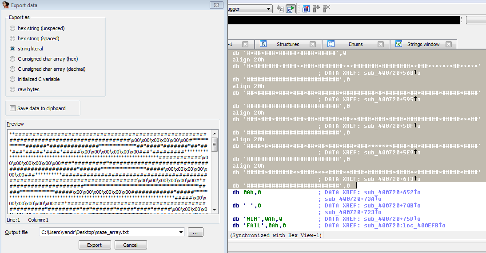

迷宫问题¶
迷宫问题有以下特点:
- 在内存中布置一张"地图"
- 将用户输入限制在少数几个字符范围内.
- 一般只有一个迷宫入口和一个迷宫出口
布置的地图可以由可显字符(比如#和*)组合而成(这非常明显, 查看字符串基本就知道这是个迷宫题了.), 也可以单纯用不可显的十六进制值进行表示. 可以将地图直接组成一条非常长的字符串, 或是一行一行分开布置. 如果是一行一行分开布置的话, 因为迷宫一般都会比较大, 所以用于按行(注意, 布置并非按顺序布置, 每行都对应一个具体的行号, 你需要确定行号才能还原迷宫地图)布置迷宫的函数会明显重复多次.
而被限制的字符通常会是一些方便记忆的组合(不是也没办法), 比如w/s/a/d, h/j/k/l, l/r/u/d这样的类似组合. 当然各个键具体的操作需要经过分析判断(像那种只用一条字符串表示迷宫的, 就可以用t键表示向右移动12个字符这样). 对于二维的地图, 一般作者都会设置一个X坐标和一个Y坐标用于保存当前位置. 我们也可以根据这个特点来入手分析.
一般情况下, 迷宫是只有1个入口和1个出口, 像入口在最左上角(0, 0)位置, 而出口在最右下角(max_X, max_Y)处. 但也有可能是出口在迷宫的正中心, 用一个Y字符表示等等. 解答迷宫题的条件也是需要根据具体情况判断的.
当然迷宫的走法可能不止1条, 也有情况是有多条走法, 但是要求某一个走法比如说代价最小. 那么这就可以变相为一个算法问题.
Volga Quals CTF 2014: Reverse 100¶
接下来我们以这道题进行示例, 这是一道简单的迷宫题. 该题对地图按行乱序布置, 使用的字符是#和*.
对应的crackme可以点击此处下载: rev100
对应的idb可以点击此处下载: rev100.i64

我们可以到.rodata段用光标选择所有的地图字符串, 按下shift+E提取所有的地图数据.

但是目前提取到的地图字符串, 从上往下并非是按顺序的, 因此我们需要回到IDA生成的伪C代码, 获取行号并重新排序组合起来.
最后得到的完整地图如下:
对应的迷宫地图文件可以点击此处下载: maze_array.txt

再来看迷宫移动所需要的字符:

这里我们知道, 可以使用的字符有L/R/U/D, 分别对应于左/右/上/下.
再往下看

通过调试是可以知道, 这里其实是每次在用户输入L/R/U/D后, 先打印一次你的输入, 然后打印对应的X/Y坐标. 而最后的判定成功的条件, 就是当pos_x == 89 && pos_y == 28. 那么我们就可以根据上述信息, 获得走出迷宫的路径.

最后得到的迷宫路径就是
RDDRRRRRRRRRRRRRRRRRRDDDDDDDDDDRRRRRRRRRRRRRRRRRRRRRRRRRRRRRRRUUUUUULLLLLLLLLDDRRRRRRDDLLLLLLLLLLLLLUURRRUUUUURRRRRRRRRRRRRRRRRRRRRRRRRRDDDDDDDDDDDDDDDRRRRRRRRRRRRRRRRUUUUUUUUUUUUULLLLLLLUUUURRRRRRRRRRRRDDDDDDDDDDDDDDDDDDDLLLLLLLLLLLLLLLLLLLLLLLLLLLLLLLLLLLLLLLLLLLLLLLLLLLLLLLLLLLLLLLLLLUUUURRRRRRRRRRRRRRRRRRRRRDRRRRRRRRRRRRRRUUULLLLLLLLLLLLLLLLLLLLLLLLLLLLLLLLLLLLLLLLLLLLLLLLLLDDDDDRRRRRUUURRRRDDDDDLLLLLLLLLDDDDRRRRRRRRRRUUURRRRRRRRRRRRRRRRRRRRRRRRRRRRRRRRRRRRRRRRRRRRRRRRDDDDDDRRRRRRRRRRRRRRRRRRRRRRRRRRRR
参考链接¶
本页面的全部内容在 CC BY-NC-SA 4.0 协议之条款下提供，附加条款亦可能应用。